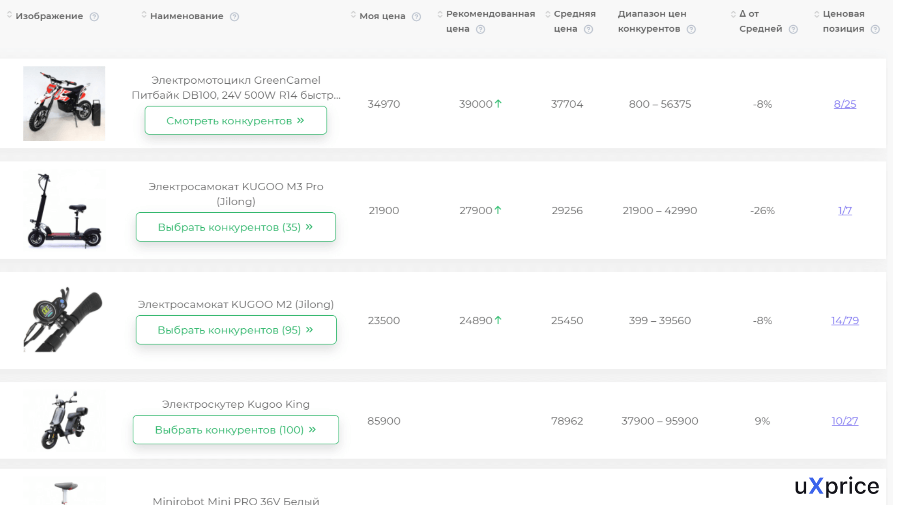

Как работает парсинг
Процесс парсинга можно схематично разделить на три шага.
-
1. Вы указываете в программе условия, по которым нужно найти данные.
-
2. Парсер сканирует код указанных сайтов — их называют целевыми — и ищет нужные данные.
-
3. Собранные данные выводятся в отчете или собираются в таблицу.
Например, вы выходите на рынок товаров для животных и хотите узнать, какие цены устанавливают конкуренты на
аналогичные продукты. Вы указываете в парсере товары, на которые нужно найти цены, выбираете нужный регион,
перечисляете сайты конкурентов и запускаете программу.
Парсер анализирует указанные сайты, находит нужные товары и собирает расценки в единую базу. После окончания
анализа программа формирует отчет — и вы можете наглядно увидеть ценовую политику в вашей отрасли.
